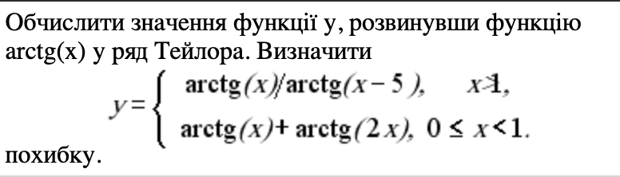
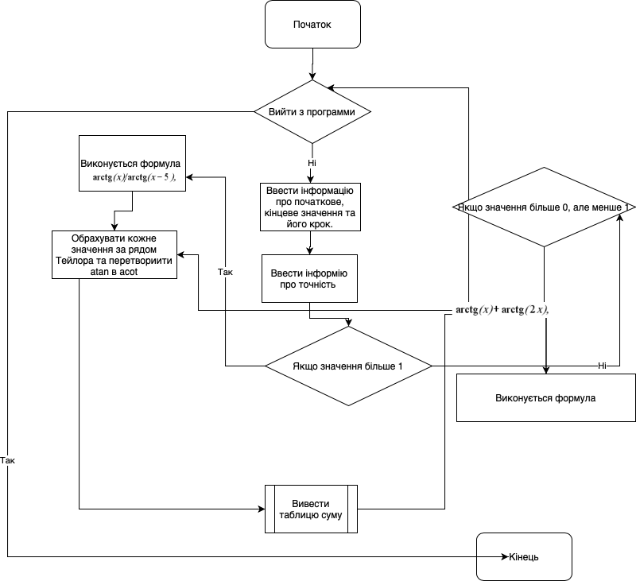
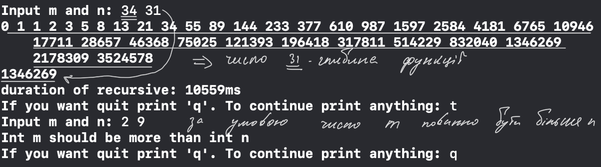
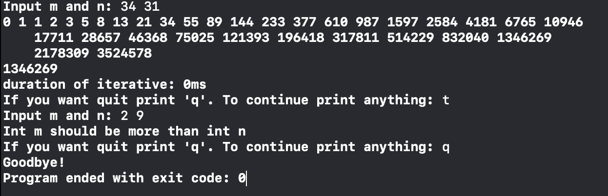
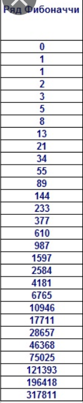
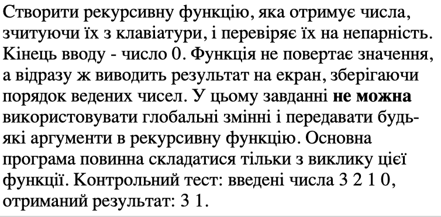
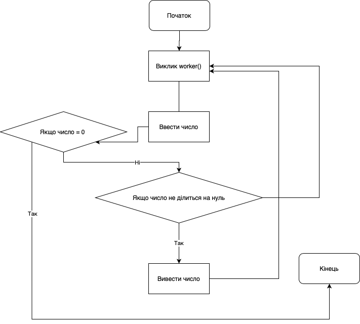
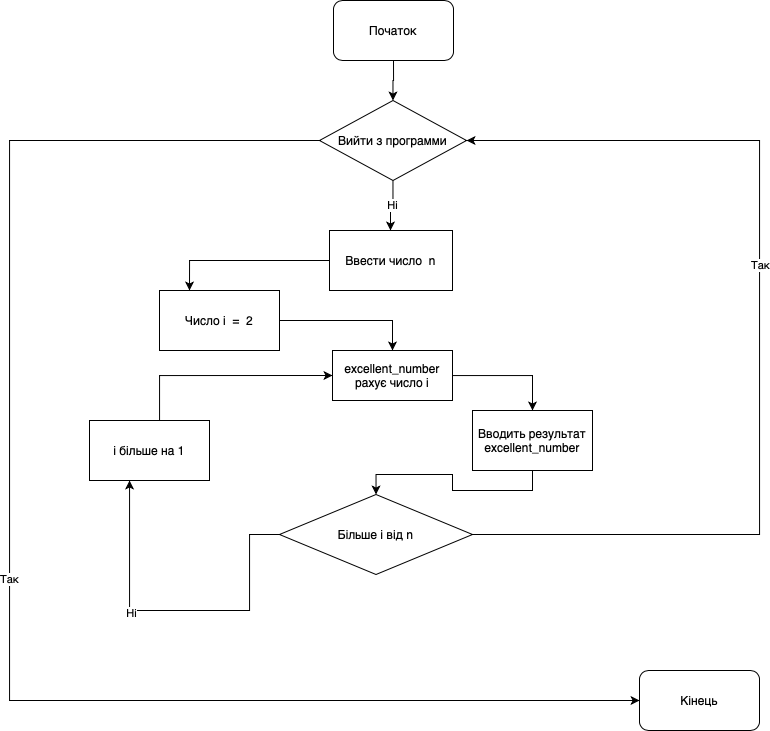

Студент: Крисевич Данило
Група: ІПЗ-12
З навчальної дисципліни: основи программування
Мета роботи:
Умови задач:
Аналіз задачі:
Умова:
Реалізація:
Код программи (Рекурсивно):
#include <iostream>
int fibonacci(int f) {
if (f == 0) return 0;
if (f == 1) return 1;
return fibonacci(f-1) + fibonacci(f-2);
}
void rec_fib(int n, int m) {
unsigned long long int res;
for (int count = 0; count < m; ++count) std::cout << fibonacci(count) << " ";
std::cout << std::endl;
auto t1 = std::chrono::high_resolution_clock::now();
res = fibonacci(n);
auto t2 = std::chrono::high_resolution_clock::now();
std::cout << res << std::endl;
auto duration = std::chrono::duration_cast(t2-t1).count();
std::cout << "duration of recursive: " << duration << "ms" << std::endl;
}
int main(int argc, const char * argv[]) {
bool quit = false;
while (!quit) {
int m, n;
std::cout << "Input m and n: ";
std::cin >> m >> n;
if (m < n) {
std::cout << "Int m should be more than int n" << std::endl;
}
else {
rec_fib(n, m);
}
std::string input;
std::cout << "If you want quit print 'q'. To continue print anything: ";
std::cin >> input;
if (input == "q")
{
quit = true;
}
}
std::cout << "Goodbye!" << std::endl;
}
Код программи (Ітеративно):
#include <iostream>
unsigned long long int iter_fib(int n) {
if (n < 2)
return n;
unsigned long long int mask = 1, m = n;
while (m > 1) {
m >>= 1;
mask <<= 1;
}
unsigned long long int fn = 1, fn1 = 1, gn, gn1;
while (mask > 1) {
mask >>= 1;
gn = fn;
gn1 = fn1;
if (n & mask) {
fn = gn1 * gn1 + gn * gn;
fn1 = gn1 * gn1 + 2 * gn * gn1;
} else {
fn = 2 * gn * gn1 - gn * gn;
fn1 = gn1 * gn1 + gn * gn;
}
}
return fn;
}
int main(int argc, const char * argv[]) {
bool quit = false;
while (!quit) {
int m, n;
std::cout << "Input m and n: ";
std::cin >> m >> n;
if (m < n) {
std::cout << "Int m should be more than int n" << std::endl;
}
else {
unsigned long long int res;
for (int i = 0; i < m; i++) std::cout << iter_fib(i) << " ";
std::cout << std::endl;
auto t1 = std::chrono::high_resolution_clock::now();
res = iter_fib(n);
auto t2 = std::chrono::high_resolution_clock::now();
std::cout << res << std::endl;
auto duration = std::chrono::duration_cast(t2-t1).count();
std::cout << "duration of iterative: " << duration << "ms" << std::endl;
}
std::string input;
std::cout << "If you want quit print 'q'. To continue print anything: ";
std::cin >> input;
if (input == "q")
{
quit = true;
}
}
std::cout << "Goodbye!" << std::endl;
}
Коментарі:
Для більш зручної взаємодії з программою я додав цикл, що повторює функціонал программи рівно стільки раз - скільки хоче того користувач, таким чином я ініцилізував тип данних string з індефікаторм input для зчитування данних, що ввів користувач.
Викристав метод now() для обрахунку часу, що потрібен функції fibonacci().
Ітераційний підхід виявився набагато кращим за рекурсивний.
Результат:
Рекурсивно:
Ітеративно:
Аналіз:
При вводі данних программа видає однаковий результат і якщо подивитись на таблицю фибонначі, то побачимо, що результат правильний.
Умова:
Блока-схема:
Код программи:
#include <iostream>
using namespace std;
void worker() {
int number;
cin >> number;
if (number == 0) {
return;
}
else if (number % 2 != 0) {
cout << number << " ";
}
worker();
}
int main() {
worker();
}
Результат:
Аналіз:
Программа будет працювати до тих пір поки не отримує нуль.
Висновки